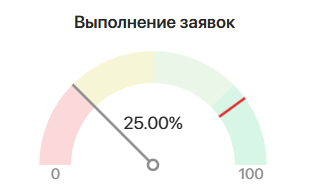
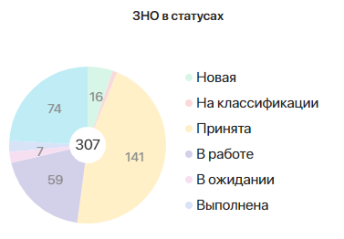
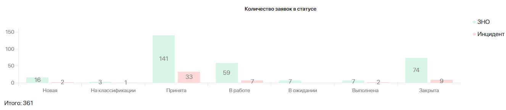
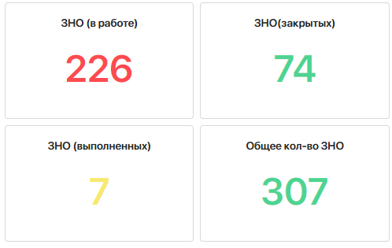
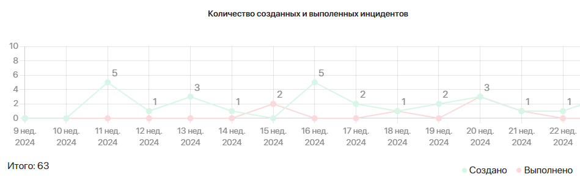
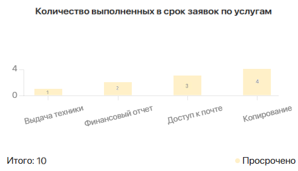

В разделе Аналитика SD 2.0 > Дашборды вы можете просматривать отчёты с показателями по заявкам на дашборде.
Информация о заявках выводится в отчётах в виде графиков и диаграмм. Для отображения разносторонних данных вы можете использовать перечисленные в статье типы отчётов.
Своевременность решения TPI
График типа Спидометр позволяет посмотреть процентное соотношение между количеством всех обработанных заявок и заявок, которые выполнены в срок. Красной линией обозначен показатель норматива SLA для выбранной услуги.
Удобно использовать, чтобы по местоположению стрелки и красной линии сравнить, насколько фактический процент вовремя закрытых заявок соответствует нормативу.
Отчёт может выглядеть следующим образом:

На спидометре показано, что в компании 25% всех заявок закрыто в срок. Красная отметка отображает допустимый норматив выполнения заявок по определённой услуге — 80%.
Объём заявок в статусе
На отчёте можно посмотреть количество заявок определённого типа в каждом статусе. Данные можно отобразить в виде:
- круговой диаграммы — чтобы отследить, сколько заявок определённого типа находится в каждом статусе. Например:

В отчёте показано, что общее количество заявок типа ЗНО — 307. Каждое деление на диаграмме соответствует количеству заявок в определённом статусе;
- столбчатой диаграммы — удобно использовать для наглядного сравнения количества заявок всех типов в каждом статусе на одном графике. Например:

На диаграмме можно увидеть, сколько всего заявок всех типов получено. Столбцы отображают число заявок определённого типа в каждом статусе.
Количество заявок
График типа Число показывает количество заявок по выбранным услугам. Доступна фильтрация по статусам.
На одном отчёте можно вывести число заявок одного типа в определённом статусе. Чтобы отобразить данные для сравнения, добавьте несколько отчётов. Например:

В отчётах видно, сколько заявок типа ЗНО всего получено, сколько из них в работе, закрыто и т. д.
Качество работы
График Столбчатая диаграмма (с накоплением) выводит количество просроченных и выполненных в срок заявок за период.
Удобно с помощью одного графика сравнить, сколько заявок определённого типа закрыто вовремя или позже срока в каждом месяце.
Может выглядеть следующим образом:

Объём поступивших и выполненных заявок
Линейный график отражает динамику поступивших и выполненных заявок за период времени.
На одном графике можно показать еженедельное изменение количества созданных и закрытых заявок определённого типа.
Например, может выглядеть следующим образом:

На графике представлено, что в период 9–22 недели 2024 года получено 63 заявки типа Инцидент. Из них на 11-й неделе не выполнено ни одной заявки, а создано пять. На следующей неделе создана только одна заявка и т. д.
Объём работ в количестве заявок по услугам
С помощью столбчатой диаграммы вы можете отследить услуги с большим количеством просроченных или, наоборот, закрытых в срок заявок. Доступна фильтрация по типам заявок и группам поддержки.
Например, отчёт для просмотра числа просроченных заявок по услугам может выглядеть следующим образом:

Объём заявок, выполненных в срок, по операторам
На графике типа Столбчатая диаграмма (с группировкой) выводится количество заявок, выполненных каждым оператором в положенный срок. Доступна дополнительная фильтрация по просроченным заявкам.
Вы можете отследить, сколько всего заявок за указанный период обрабатывает каждый оператор, а также какое количество из этих заявок закрывается после нормативного срока. Таким образом можно оценить эффективность работы сотрудников.
Например:

На графике видно, что всего получено девять заявок типа Инцидент, а также сколько каждый оператор выполнил заявок и какое число из них закрыто позже срока.